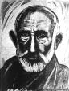

Resmi kayıtlara göre 1862 yılında Rize’nin Portakallık Mahallesi’nde doğmuştur. Fakat arkadaşları onun doğum tarihinin daha erken olduğunu söylemektedirler. Babası Emiralioğullarından Hüseyin’dir.[9]
Çok haylaz ve söz dinlemez bir çocuk olduğu için annesi tarafından “İpsiz” lakabı ile çağırılmıştır. Eşi Nadire Hanım’a göre ise “İpsiz” lakabı ona eli çok açık olduğu ve kazandığını sağda solda harcadığı için verilmiştir.[10] Aynı zamanda çetesinin elemanı olan yeğeni Kara Emin’in “Emice” diye hitap etmesi sebebiyle diğer arkadaşları tarafından da bu lakap benimsenmiş ve hep “Emice” diye çağırılmıştır.[11]
1905/İpsiz Tiflis’te
İpsiz Recep’in üçüncü kuşak akrabası olan Doç. Emin Gürses, konu ile ilgili olarak yazmış olduğu bir makalede, İpsiz Recep’in 1905’li yılların başlarında Tiflis’te Fırıncılık yapmakta olduğunu belirtmektedir. Bu sırada Ermenilerin meşhur Yıldız Suikastı[12] meydana gelmiştir. Hadise o dönem Ermeni hareketlenmesinin merkezi olan Tiflis’te de hemen yankı bulmuş buradaki Müslümanlarla Ermeniler arasında çatışmalarla neticelenecek gerginliğe yol açmıştır.[13] Ölümlerle neticelenen[14] bu çatışmaların içerisinde aktif olarak yer alan İpsiz Recep Batum’a geçmek zorunda kalmış ve burada da yine fırıncılık mesleğine devam etmiştir.[15]
3 Mart 1909/Kefken’in keşfi
İpsiz Recep bundan yaklaşık 4 yıl sonra ise Kefken’dedir. Kefken Adası Fenercisi Hüseyin Çavuş (Işık)’un verdiği bilgiye göre İpsiz Recep’in Kefken’e ilk geliş tarihi 1909 senesidir. Bu dönemde de yine burada eşkıyalık ve korsanlık yapmıştır.[16] Bu bilgi Osmanlı Arşivi’nde yer alan bir belge ile de doğrulabilmektedir. Zaptiye Nezareti’nden, Üsküdar ve Beyoğlu Mutasarrıflıkları’na 16 Mart 1909 tarihinde yazılan bir yazıda; meşhur eşkıyalardan İpsiz Recep’in beş adamıyla birlikte Kefken iskelesinden Şile sahiline doğru hareket ettiğinin Şile Kaymakamlığı’nca bildirildiği, bu istihbarata göre adı geçen eşkıyanın aynı kayıkla bir hafta önce Şile açıklarından geçerek Rumeli Feneri’ne gittiği ve bunların Rumeli Feneri’nde Rizeli Mahmud veyahut Bayram Reislerin yanında saklanacaklarının anlaşıldığı belirtilmekte ve gerekli tedbirlerin alınması istenmektedir.[17] Bu ifadelerden anlaşıldığına göre 1905’lerde Tiflis ve Batum’da fırıncılıkla meşgul olduğu belirtilen İpsiz Recep, 4 sene içerisinde kendine “meşhur eşkıya” sıfatını yakıştıracak kadar kanunsuz işlere bulaşmıştır. İşin bir diğer ilginç tarafı devletin, hem de İstanbul’a mücavir alanlarda bile kendisini takip etmesine rağmen yakalama teşebbüsünde bulunmayışıdır.
Fenerci Hüseyin Çavuş, İpsiz Recep ve arkadaşlarının aynı tarihlerde Kefken açıklarından geçen birçok takayı ve yelkenlileri soyduğu gibi ara sıra Kandıra tarafına geçerek oradan vurgunla döndüklerinden de bahsetmektedir. Bir seferinde de büyük bir vurgun için İğneada’ya gittiklerini ancak oradan boş döndüğü gibi canlarını bile zor kurtarmış olduklarını söylemektedir.[18]
İpsiz’in Rusya’daki mahkûmiyeti
İpsiz Recep’in hayatında ki en önemli hadiselerden biri kuşkusuz Rusya’daki mahpusluk dönemidir. Ancak mahkûmiyeti ne zaman ve hangi sebepten dolayı olduğuna dair kesin bir kayıt yoktur. Sebahattin Özel, Rize ile Rusya arasında tuz kaçakçılığı yaparken 1917 İhtilali sırasında Ruslara esir düştüğünü belirtirken[19] merhum Sertoğlu, bu serüven hakkında daha farklı ifadeler kullanmaktadır. Ona göre Rus hükümeti, İpsiz Recep’in, Batum’dan Rize’ye 17 Rus’u motoruyla taşımaktayken, II. Abdülhamid’e yapılan Yıldız Suikastı’nın intikamını almak için denize atmaktan dolayı Osmanlı hükümetine baskı yapmıştır. Hükümet de bu baskı üzerine yerel güvenlik kuvvetlerine İpsiz Recep’in yakalanması hususunda emir vermiştir. Ancak İpsiz Recep, Batum’a firar etmiş, bu kez de Batum’da kendini tanıyan Arşak adında birisi onu Rus yetkililerine ihbar ederek tutuklanmasını sağlamıştır. O esnada yaşanan Bolşevik İhtilali dolayısıyla Rus mahkemeleri tarafından daha önce hakkında verilmiş olan idam cezası ömür boyu hapse dönüştürülmüş ve bu cezasını çekmek üzere Sibirya’ya gönderilmiştir. Bir süre Sibirya’da cezası karşılığında taş ocaklarında çalıştırılırken bir Azeri’nin yardımıyla firar ederek memleketine dönmüştür.[20] Sertoğlu’nun ifadelerinden de İpsiz’in Ruslara yakalanış tarihi yine 1917 senesi olduğu anlaşılmaktadır. Ancak 1917 senesinden evvel Rusya ile Osmanlı Devleti savaş durumunda olması sebebiyle Osmanlı hükümetine bu yolda bir baskı geleceği, gelse bile umursanacağı düşünülemez. Bu durumda Murat Sertoğlu’nun ifadelerinde bir tezat olduğu açıktır. Ama her iki rivayetten onun tutuklanış tarihini 1917 yılı olarak tahmin etmek mümkündür. Bu durumda da Sibirya’da çok da fazla kalmamış olmalıdır. Çünkü İpsiz Recep aynı yıl içerisinde Rize’nin kurtuluşuna öncülük eden ekiple birliktedir.
1917/Rize’nin kurtuluşu ve İpsiz
I. Dünya Savaşı esnasında, göğüs göğse yapılan Arhavi Savaşı, Fındıklı Deresi Savaşı, Fırtına Vadisi Savaşı gibi büyük savunma örneklerine rağmen silah ve cephane yetersizliği sebebiyle sayıca da çok üstün olan Rus kuvvetleri Mart 1916’da Rize’yi işgal edebilmişlerdi. Ancak Ruslar Rize ile yetinmeyip daha batıya doğru ilerlemelerini sürdürüyorlardı. Ne var ki, 1917 Sonbaharında Rusya merkezinde baş gösteren Bolşevik (komünist) hareketleri bu saldırıları yavaşlatmıştı. Nihayet Bolşevikler idareyi ele geçirip 8 Kasım 1917’de savaş halinde oldukları devletlere barış çağırısında bulundular. 18 Aralık 1917 tarihinde Erzincan’da yapılan antlaşmayla da Rus askerlerinin Osmanlı topraklarından çekilme takvimi ve şekli belirlendi. Bu günlerde şehri boşaltacağı anlaşılan Rusların yerinin derhal doldurulması ve anarşiye meydan bırakılmaması için Şark-ı Müdafaa-i İslam Cemiyeti’nin ileri gelenleri 1 Mart 1918’de bir toplantı yaptılar. Kurtuluş mücahitlerinden Mühendis Osman (Kalamazoğlu)’nın evinde yapılan toplantıdan sonra “kurtuluş” pencereden atılan 5 el silahla halka müjdelendi. Muhittin (Sarol) Bey tarafından halka, Mühendis Osman Bey’in başkanlığında oluşturulan idarî heyete itaat edilmesi gerektiği duyuruldu. Bir müddet sonra Rize’ye giren milli orduyu halk sevinç çığlıkları, çiçekler ve kurbanlarla karşıladı. Taraflar arasındaki anlaşmaya rağmen halk ve çeteler, çekiliş esnasında Rusları kendi haline bırakmamış, bir nevi çekilen acıların ve dökülen masum kanların intikamı için yer yer saldırılarda bulunmuştur.[21]
Tam da bu sıralar bir fırsatını bulup Sibirya’dan firar eden İpsiz Recep de Rize’ye dönmüş bulunuyordu. Dönüşü esnasında Şark Cephesi Kumandanı Muhittin Bey (sonradan general, Sarol) ile tanıştı. Kurtuluşu müteakip İpsiz Recep arkadaşı Zekeriya (Tiryaki) ile birlikte 37. Tümen emrindeki milis kuvvetlere dahil oldular. Bu tümenin vazifesi Bolşevik İhtilali’ni müteakip Batum’da kurulan Gürcü idaresine son vermekti.[22]
1917 İpsiz Recep Batum önlerinde
Harekâtın Batum’a kadar sürdürülmesine İpsiz Recep’in sevinci sonsuz olmuştur. Çünkü orada başına gelenleri hiç unutmuyordu. En büyük ümidi de Batum’a girdikten sonra kendisine oyun oynayan Arşak’ı bulmak ve onunla hesaplaşmaktı. Kader arkadaşı Zekeriya Tiryaki’nin anlattığına göre, adeta kabına sığmaz bir hali vardı. Ancak işi kolay değildi. Cephelerden dönen büyük Rus kuvvetleri Batum’da toplanmıştı. Bunların sayıları Türk kuvvetlerinden kat kat fazlaydı.
Ne var ki Rus kuvvetlerinin bir kısmı tam bir panik halindeydiler ve memleketlerine ulaşmaktan başka bir şey düşünmüyorlardı. Ama bir kısmı da karınlarını olsun doyurabilmek için Batum’da kurulan Çarlık taraftarı hükümetin emrine girmişti.
Büyük bir heyecanla yola çıkan Türk kuvvetleri Hopa’da kısa bir süre durakladıktan sonra yola devam ettiler. Hedef Batum’daki iki kaleydi. Ayrıca Deli Halit Bey[23] komutasında bir birlik de Azerbaycan’dan gelerek Osmanlı kuvvetlerine katılmıştır. Zekeriya Tiryaki bu harekâtta kendisinin bombacı olarak görev yaptığını söylemektedir. Harekâtın hedefi, Örek Tabyaları’nın ele geçirilmesidir. Ancak savaş, tahminlerinin daha da üzerinde bir şiddette seyir izlemiştir. İpsiz Recep ve Zekeriya Tiryaki birlikleriyle beraber Batum önünde tam bir hafta savaşmışlar, sonunda Rusların karşı koyma gücü tükenmiş ve Örek Tabyaları ele geçirilerek Türk bayrağı dikilmiştir. Diğer tabyaya da 37. Tümen bayrak dikmişti.
Batum’dan sonra Çürüksu da alınarak vazife tamamlanmış bulunuyordu. Fakat İpsiz Recep’in işi henüz bitmemişti. Zekeriya’yı da yanına alarak daha önce kendisini Ruslara ispiyonlayan Arşak’ı aramaya başladı. Ne var ki ne Arşak’ı, ne de arkadaşlarını bulamadılar. Bunlar Türk ordusu Batum’a girmeden önce savuşmanın yolunu bulmuşlardı.[24]
1918/Hayat mücadelesinden…
İpsiz Recep ve Zekeriya Tiryaki bir süre daha Batum’da kaldıktan sonra çetelerin memleketlerine dönebileceklerinin bildirilmesi üzerine tekrar Rize’ye döndüler. İpsiz Recep o zaman elde bulunan yüz tonluk Rus motoru[25] ile Zonguldak’tan İstanbul’a kömür taşımayı düşündü. Zaten bu motor tamamıyla da kendisinin değildi. Mühendis Osman Bey’le tüccardan Likzâde Hasan Efendi’nin ortaklıkları vardı. Motoru yola çıkacak hale getirmek için para harcamak gerekiyordu. Bu işi onlar üzerlerine aldılar, İpsiz Recep de sermayesiz ortak haline geldi.
İpsiz Recep bir gün Zonguldak’tan kömür yüklü olarak İstanbul’a giderken motoru Kefken Adası açıklarında batık bir gemiye çarparak parçalandı. Motorla birlikte bu işe koyulan sermaye de mahvolmuştu. Kendisi ve birkaç tayfası çok iyi yüzücü olduklarından sert dalgalara rağmen yüze yüze kıyıya ulaşabildiler. Oradan da İstanbul Sarıyer’e geldiler. İpsiz Recep İstanbul’a geldiği zaman I. Dünya Savaşı sona ermiş Osmanlı Devleti’nin imzalamış olduğu Mondros Mütarekesi gereği Müttefik Devletlerin gemileri İstanbul açıklarına doluşmuştu.
Rizeliler İstanbul’un Sarıyer denilen boğaz semtini öteden beri pek severlerdi. Burada çok Karadenizli yaşardı. Bunlar kayıkçılık, motorculuk ve balıkçılık, yapmaktaydılar. İşsiz kaldıklarında da bir kısmı işi, kaçakçılığa ve eşkıyalığa dökerdi.
İpsiz Recep, arkadaşları ile beraber Sarıyer’e gelince oraya yerleşmiş bulunan Rizeli Hafız Mehmed Efendi[26] ile İslampaşa Mahallesi’nde oturan yine Rizeli Cafer Mercan’ı[27] buldu. Bunlar felakete uğrayan hemşerilerine yardım ettiler. Onlara yatacak yer gösterip biraz da borç para verdiler.
İpsiz ve arkadaşları bütün günlerini Sarıyer’de Karadenizlilerin devam ettikleri bir kahvede geçiriyorlardı. Burada memleketin başına gelen felaketler konuşuluyor her gün yeni bir kötü haber duyuluyordu. Yine kahvede konuşulan belli başlı konulardan biri de Sarıyer ve çevresinde son zamanlarda birtakım Rum çetelerinin türemiş olmaları idi.
İpsiz Recep bir gün yine kahvede arkadaşları Hasan Sekmiş, Mehmed Altıkan, Saloğlu Kara Mehmed’le otururken içeriye sivil bir adam girdi. Doğruca kahve sahibine yaklaşıp bir şeyler sordu.
Kahveci de arkadaşları ile oturmakta olan İpsiz Recep’i kendisine gösterdi:
— Aradığınız adam budur.
İpsiz Recep merak içinde idi. Acaba bu yabancı kimdi ve kendisinden ne istiyordu?[28]
Milli Mücadele’ye…
Gelen Garipçeli Yüzbaşı Ziya idi. Garipçeli Yüzbaşı Ziya bir müddet önce kurulmuş olan gizli bir cemiyetin adamıydı.[29] Örgütün çok gizli bir teklifini getirmişti.[30] Teklifte İpsiz Recep’in Milli Mücadele için çalışması ve Milli Mücadele için çok mühim olan Kocaeli Yarımadası’nın en uç bölgesinde bulunan Kefken ve Kandıra civarlarındaki Türk nüfusunun korunması için milli bir müfreze oluşturması isteniyordu. Bunun için her türlü silah yardımı kendisine yapılacaktı. Bu andan itibaren artık İpsiz Recep millet ve memleket için çalışacaktı. Bunun için de emirleri Milli Mücadele’nin ilk tohumlarını atan Karakol Cemiyeti’nden alacaktı.